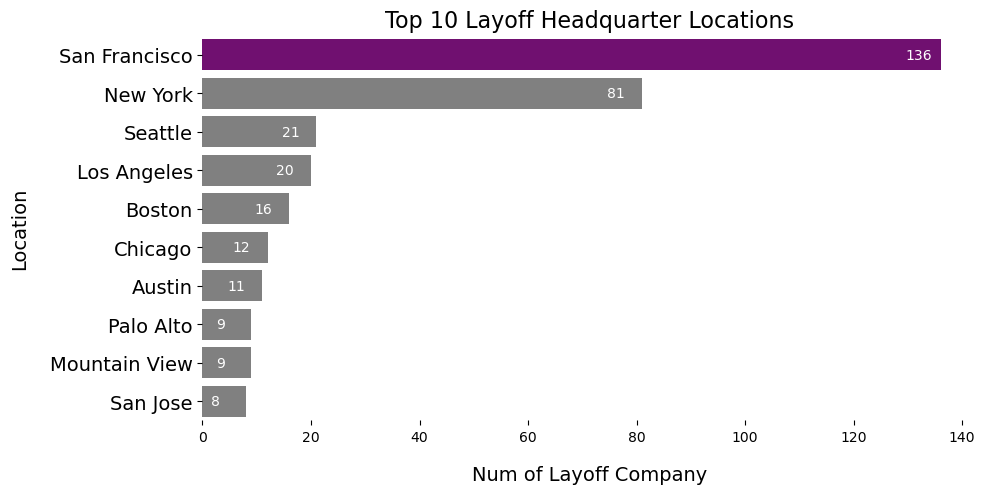
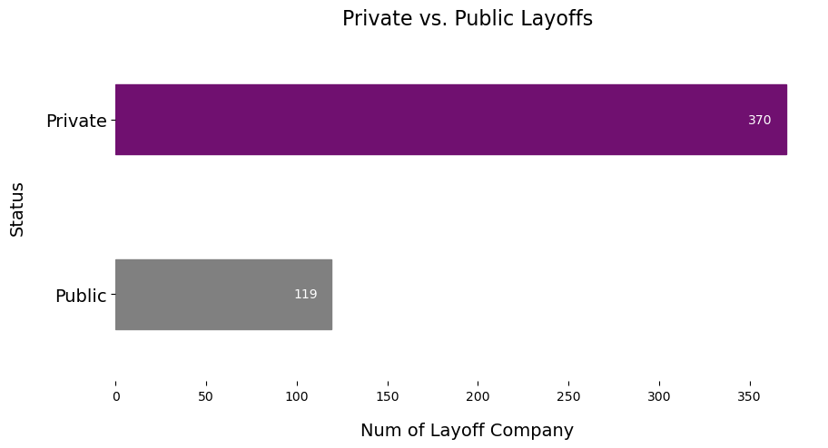

Overview
In the dynamic landscape of the technology industry, the phenomenon of layoffs has become an increasingly prevalent and noteworthy aspect. Understanding and closely monitoring this phenomenon is crucial for various people, especially for graduating students who are desperately seeking for a job. Thus, in my project, I am going to analyze the dataset that I found on Kaggle by visualizing certain important facts about those layoff companies by answering the questions:
- -Who they are?
- -What industry they are?
- -Where they are?
- -When they started the layoff?
This Choropleth Map visually represents the geographic locations of layoff company headquarters. The legends delineate general industry categories and illustrate the range of workforce impact caused by layoffs. By hovering over each data point, tooltips provide detailed information about individual companies. Upon a quick overview, one can observe a higher concentration of layoff companies on the east and west coasts compared to central America. For a more in-depth exploration, users can click on different industries in the legend, revealing specific locations for each industry. This functionality extends to the Impacted Workforce Range, allowing users to discern patterns in layoff distribution across states. Notably, as the impacted workforce increases, there is a noticeable trend of more layoff companies being situated on the west coast. In summary, this interactive map offers a comprehensive view of layoff data, empowering users to analyze geographic, industry, and workforce impact patterns with ease.

Aspect Comparisons
This section will systematically examine layoff data in correlation with various factors, including company specifics, industry classification, headquarters location, and the IPO (Initial Public Offering) status of the entities involved. This comprehensive approach aims to provide a nuanced understanding of the layoff phenomenon within the technology sector. It also facilitates a more informed analysis of the factors influencing layoff trends, enabling individuals to formulate strategies to navigate the evolving tech job market.

- Amazon holds the distinction of having the highest total number of laid-off employees, reaching a significant figure of 18,000 individuals.

- Opting for a more granular approach, I've chosen to utilize detailed industry categories for a nuanced comprehension of the data points. Notably, Fintech emerges at the forefront, holding the top rank with 50 firms undergoing layoffs in this particular industry.

- The Choropleth Map provided earlier offers insights into potential areas with higher layoff occurrences. Complementing this, the accompanying bar chart underscores that San Francisco stands out with the highest count of layoff companies, totaling 136 firms.

- The data reveals that private companies, totaling 370 firms, surpass public companies in terms of layoffs. This indicates a notable trend where the private sector experiences a higher incidence of layoffs compared to their public counterparts.
Time Series
The Bar Chart and Packed Bubble Chart work in tandem to illustrate the dynamic changes in total layoffs over time. The interactive feature allows users to focus on specific industries by clicking on the respective legend entries. This functionality synchronizes both the Bar Chart and Packed Bubble Chart, providing a detailed breakdown of layoffs within the chosen industry. The Packed Bubble Chart introduces a time-based dimension, enhancing the temporal understanding of layoffs. Enabling the PLAY button automates the display of layoff companies each month, and hovering over individual bubbles provides additional details, contributing a nuanced layer to the insights gleaned from the Bar Chart. This Kaggle dataset indicates that layoffs commenced in January 2022, exhibiting slight fluctuations throughout the year. Notably, the data reaches its zenith in January 2023.

About Author
Hi! This is Fangzhi Li, a junior majoring in Data Science and Applied Math at William&Mary.
This website is the final project of DATA 303 - Data Visualization course.
The Choropleth Map and Bubble Chart was made by Tableau, and bar charts by Seaborn (code can be found HERE).
The first thing that I did after getting the data was to clean the whole dataset.
I dropped the columns that are not useful for the data analysis.
Then, I further grouped the industry fields so that there won't be overlapping indursties with different namings.
The original dataset has 289 different industries, after the cleaning process, there are 89 now.
Then, I created a 'industryByStockMarket' column which contains the further grouped industries referred
by the stock market - 8 more generalized industries.
After that, I cleaned the 'headquarter_location' to contain only the city names, not the state names.
Then, I used the Geocode add-ons to encode the latitude and longitude of each headquarter cities
so that Tableau can show each position on the map.
Detailed data cleanse code can be found HERE.